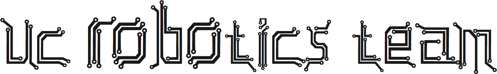
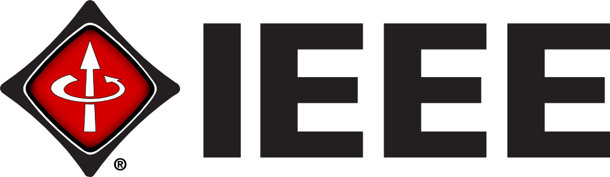
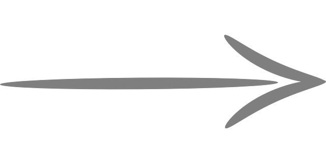
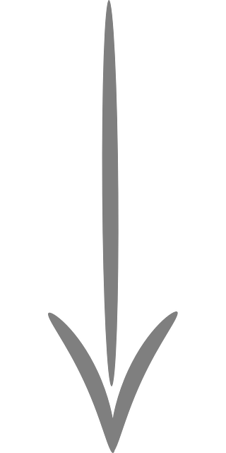
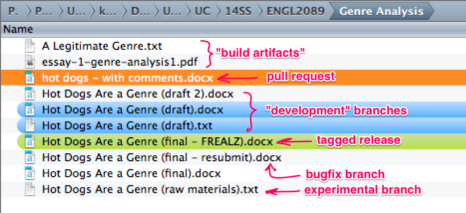
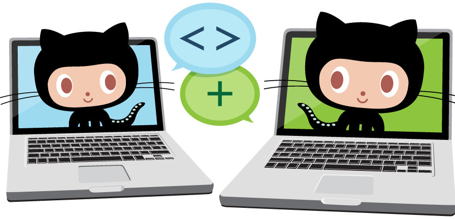

QuickFix #1
Git and GitHub workshop
October 28, 2014
Presented by UC Robotics Team and UC-IEEE
 
All links open in a new window/tab
Use the arrow keys or swipe to get started

First, apologies
There is no food allowed inside the collaboration area (Room 801). Be careful with your coffee.
Administration is pretty adamant about this, and we want to be able to use this space again.

For the Impatient:
The course materials are at
http://bit.ly/quickfix1home
If you don't have a UC Central Login Service account,
click the octocat icons ()
next to each link for the
GitHub.com versions instead.
| URL | What it is | |
|---|---|---|
| bit.ly/quickfix1chat | If we get a big turnout and there aren't enough facilitators for every room, we'll be monitoring the Gitter chat room for questions. Requires a GitHub.com account. | |
| bit.ly/quickfix1faq | A list of what we predict might be Freqently Asked Questions, on the workshop's wiki. Pull requests welcome! | |
| bit.ly/quickfix1wiki | The workshop's GitHub project wiki. The step-by-step tutorials we'll be going through in the workshop are here. |
How to use these slides
These slides are created in HTML and CSS using a framework called reveal.js.
Which means you can turn off the stylesheet or use a browser plugin like Clearly to view all the slides at once, save into a notetaking program, or print them out as a PDF.
A few slides also have up-and-down navigation, like this one.

How to use these slides
(Continued)
I promise to use this sparingly, and only for details that you might want to skip... if you aren't interested in details.
How to use these slides
(Continued)
The whole slide deck will be available after the workshop is over at github.uc.edu/quickfixes
How to use these slides
(Continued)
These slides will also be mirrored on GitHub.com
(for people who
don't have a UC CLS login)
github.com/quickfixes
You'll see that some links in the slides are followed by an octocat icon, like this: . That octocat will take you to the GitHub.com mirror of the linked document.
If you're a UC student, you can ignore this whole slide.
Introductions
a.k.a. why are you here?

- You've heard of this thing called Git?
- Somebody's using it at work?
- This: "You really should be using version control"?
- You brought a friend? (Outstanding!)
- You are the friend? (Welcome!)
Why we're here
- To point you in the right direction
- And offer moral support
- Because Git really is that great
And because UCit pays for GitHub Enterprise for students, which is actually pretty cool of them, but it's not a well known fact outside of the CS and IT departments. And we think that's kind of tragic.
What we're here
to talk about
- Git - git-scm.com
- "The stupid content tracker"
- a system for managing sets of changes to a bunch of files (usu. code), and potentially sharing those changes with others
- GitHub - github.com

- A web-based collaboration platform built on top of Git, made for teams of coders and creators
- For our purposes, this is github.uc.edu, a kind of GitHub.com-in-a-box for UC ("GitHub Enterprise")
So.
The thing about Git is…

It's a complex and powerful system
It's a joke. Relax.
h/t
Think Like (a) Git
That's okay
So is an automobile, a Falcon 9 rocket, and the whole of human society. No one person could be expected to understand everything about those "systems" either.
We'll just cover the basics,
teach you enough to be productive with Git,
and give you a framework for understanding other references on the web when you're ready to learn more.
What is this
«version control»
you speak
of?
I can basically guarantee it's something you're
doing already.
You just didn't know it by that name
But the "version control" tricks you were using for a term paper for English Comp actually have a lot in common with the way actual VCSes work. VCSes just give names to everything.
Social coding?
This might not be something you'll "get" right away. Or have a need for. You can use Git and GitHub to manage collections of files without ever sharing them with anyone!
But imagine using email to
send iterations of a design to a client or revisions of
a research paper to a collaborator.
Social coding.
At some point in the process, there's inevitably confusion about which email represents the last version, or over who has the good (production, final, "golden") version.
Now imagine working on a software project with millions of lines
of code, and thousands of
collaborators all over the world.

This is exactly the scenario that
led to Git's creation.
Basic terms
Here are a just a few terms that you'll need to get started, translated from Git parlance into English.
There's a more comprehensive reference in the Git and GitHub Lingo article on the QuickFix #1 wiki.
Working with repositories
repoclone
Repository. A project that's being tracked by Git.
It could live on your laptop, or a remote server.
What makes it a Git repository is a folder
(usually hidden) called .git inside the project
folder. Git stores information about all previous
versions of of all files in your project inside this
folder.
To download a complete copy of somebody else's repository.
A "clone" always remembers where it came from. Git calls this "origin."
You can always make changes to your copy, but you may not have permission to save your changes back to the "origin" repository, so that's why there's…
Working with repositories
(Continued)
forkpull request
To create your own copy of somebody else's repository.
When you "fork" a repository, you make it your own. If you then clone this forked repository from, say, GitHub.com, to your laptop, you'll have the ability to send changes back to origin repository.
To ask a project owner to review changes you made in your fork and (possibly) incorporate them back into the main repository.
One of GitHub's major innovations was the "social" aspect of reviewing and approving pull requests. More on this later.
Git plumbing
Let's Git Started!
No-install option
A totally-web based tutorial. No software installation required.Using the GitHub GUI
Use GitHub for a simple HTML+CSS project- Have a peek at the "What you'll need..." section in the QuickFix #1 project README for the necessary software.
- Then follow the instructions in the README for the Dance Moves repository on GitHub
Let's Git Started!
(Continued)
Command-line Git
Use Git for a simple Ruby project (no programming experience required- Check out the "What you'll need..." section in the QuickFix #1 project README for the necessary software.
- Then go to gitimmersion.com